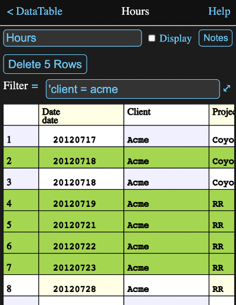

Overview
Data tables are used to store static numeric or textual data in a tabular form.
By "static", I mean that once entered, the data in a cell is not dependent on any other values. A formula can be used to enter a cell's value, but it will be evaluated immediately upon entry and only the resultant value, not the formula itself, will be stored. This is different from other Math Minion tools, such as expressions and matrices, whose formulas are reevaluated whenever any of their inputs change.
This makes data tables ideal for storing the kind of information that is often stored in spreadsheet or database tables. The analogy is stronger with the latter as spreadsheets mix their data and calculations in the same cells, whereas databases and Math Minion store static data in their tables and use external, and hence visible, operations to slice and dice this data into other table value representations, without altering the source data.
Columns (Fields)
Unlike the matrix tool, each column of a data table has a name and columns can have a different unit types or can even contain textual information. In this way columns behave much like the fields of a database table, with the rows being the records.
Each column also has a default formula, which is evaluated whenever a new row is added to the table. The result of this evaluation is used as the initial value for that column's cell in the new row.
Information View
In addition to displaying the rows and columns of data, the information view for a data table allows you to modify cell contents, add rows and columns or edit the properties of existing columns.

Add Row
The Add Row button will add a new row to the bottom of the the table, with default values set as defined by the column definition. This button is disabled if there isn't at least one column defined.
Add Column
The Add Column will display the column definition editor with some default values. Change these as appropriate and tap the Add Column button in that view to create a new column.
If the table already has one or more rows when a column is added, the initial value formula (see the column definition editor) will be evaluated for each existing row and the resulting value used for that row in the new column.
Value Table Cells
The lower part of the information view shows the table data. You can scroll this table both horizontally and vertically by dragging on a cell. Dragging on the row or column headers will scroll rapidly.
Tapping on a cell that isn't a row or column header will open a formula editor with the existing cell value and unit filled in. You can change this to any valid formula and when you tap the Apply button, it will be immediately evaluated and the result placed in the cell. The formula itself is not retained though.
Note the value you enter must match the unit type for the column, which usually means having a unit. such as:
30 km
If you are entering a value into a string column, the normal quote marks can be omitted. If you wish to enter an actual formula into a string column, begin the formula with an equals sign to tell Math Minion to evaluate it, rather than just taking it as a string.
Value Table Headers
Tapping on a column header cell (i.e. label in top row) will open the column definition editor for that column.
Tapping on a row header cell (i.e. row number) will select that row and the Add Row and Add Column buttons will be replaced by a Delete Rows button.
Tapping on additional row headers will select those rows as well. Tapping and holding on a row for a second will select all the rows between it and the previously selected row.
Tapping the Delete 5 Rows button in this view would remove rows 2, 4, 5, 6, 7.
Column Definition Editor
Tapping on the Add Column button or on the column header for an existing column will bring up an editor where you can define the column properties. Tapping on the cell at the top of the first column, labeled Date yields the following editor

The Cancel button dismisses the editor, abandoning any changes made, while the Update applies the changes to the column before dismissing the editor.
Column Name
A new column will be given a generic name, but you will almost always want to use this field to modify it to something meaningful. The columns of a given data table must have unique names.
Column Number
This be a number representing the position of the column in the table from 1 for to the number of columns starting with the leftmost. Changing it will move the column to the new position.
Initial Value
The formula you enter into this field will be evaluated whenever a new row is added to the table. The result will become the initial value for the column cell of the new row.
The initial value formula in the image above is:
{mktime {int {date {now}}}}
which calls a series of functions to produce today's date without any time of day information.
In addition, when you first add a column, the default value formula has a special significance in that its value determines if the column will be a string or a numeric column and if numeric, what its unit type will be.
Note that once you have quit from the definition editor after adding a column, the type of column cannot be changed without removing the column and adding it again. You can however modify the formula as long as it returns the same type of value.
The formula can reference other fields to the left of it in the table. This reference will return the value for the same row. This is particularly useful when adding a column to a table with existing data.
For instance if you wanted to add a column named Next where every value was was one day greater than the Date column, the initial value formula could be:
$.date + 1 d
If desired, the original column could then be deleted and the new one renamed and repositioned to replace the first. You would also want to change the initial value formula to something like it originally was.
Display Unit
If a display unit is not selected, then the default conversion unit for the column type will be used when displaying the table. Tap the unit or label to open the unit browser to select a unit to be used instead. It must be of the same type as determined by the initial value formula when the column was first created.
In the image above, the time unit Date has been selected as a more human readable time value than the underlying seconds since the beginning of 1970.
Format
You can use this field to format numeric columns. The format string is styled on C format string and typically is of the form:
%12.4f
which says the field should be 12 characters wide with 4 characters after the decimal point in normal floating point format. An e can be used instead of the f for exponential format and you can even show numbers with an arbitrary base between 2 and 36. For instance a value could be represented in hex with %14.16x. Note it is also permissable to omit the size number, i.e. %.2f would be fine and the number would just be right justified.
Delete Column
Click this button to delete the column and all of its data.
Importing, Copying and Pasting
Many applications, such as spreadsheets, can export data as comma separated value (CSV) text files. These represent tabular data, with each row of data being on one line, with the column fields separated by commas or optionally another character.
By adding 3 simple header lines to the top of a csv file and copying it to the clipboard, you can simply paste the result directly onto a Math Minion diagram to create a data table.
You can also create these csv files, complete with the headers, for many Math Minion tools by using the Copy As Table selection from the tool icon menu on the diagram.
This makes it easy to create a data table representation of other calculations as well as export Math Minion data to other applications.
Using expressions to create new representations of a table and then copying it and pasting it is an easy way to transform table values into a new static table.
CSV Format
To create a data table by pasting csv data, it must have three lines added to the top.
First Header Line
The first must be of the form:
table,en
The word "table" is just a flag telling Math Minion you want to create a table.
It is followed by a separator character. This is most commonly a comma, but tabs and semicolons are also common, particularly in regions where commas are used instead of decimal points.
The "en" is a locale indicator, in this case for English regions. This determines how the numbers in data below should be interpreted, in particular the handling of the fraction separator (decimal point in English).
For example the headers for a German CSV file might look like:
table;de
Second Header Line
The second line contains the names to be used for the columns. These must be double quoted and separated by the separator character. For instance:
"Date","User","Weight","Volume"Third Header Line
The third line contains the conversion units that match the values of the data columns below. These must also be double quoted and separated with the separator character. If the data for a column is a string, then the unit should be "string". For example:
"date","string","g","cm^3"
Data
The rest of the "file" simply consists of the data, with each line representing one row with the column data separated by the separator character. String values should be in double quotes.
Putting it all together a simple CSV representation of a table would look like:
table,en "Date","User","Weight","Volume" "date","string","g","cm^3" 20120801.0000000000,"Craig",20.0000000000,23.0000000000 20120802.0000000000,"Craig",24.0000000000,28.0000000000 20120803.0000000000,"Craig",19.0000000000,20.0000000000 20120804.0000000000,"Craig",21.0000000000,23.0000000000
Formula Parameters
Parameters that can be accessed in the form a.b where a is the tool and b is the parameter.
If the parameter is omitted a table value is returned. If the parameter is a column name, then the column value is returned as a column array.
Other parameters are:
- table - also returns a table value.
- nrow - number of rows in the table.
- ncol - number of columns in the table.